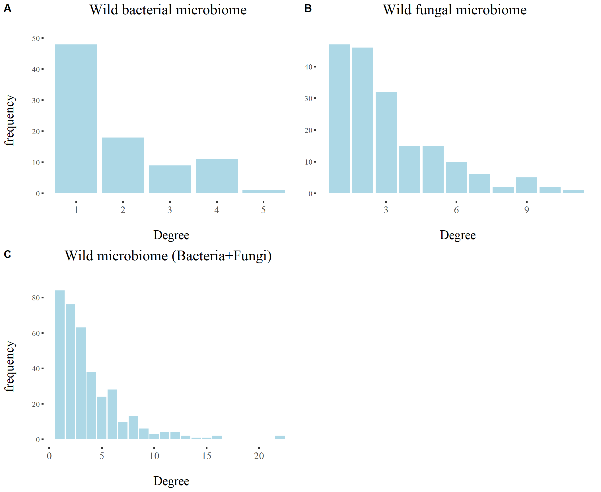
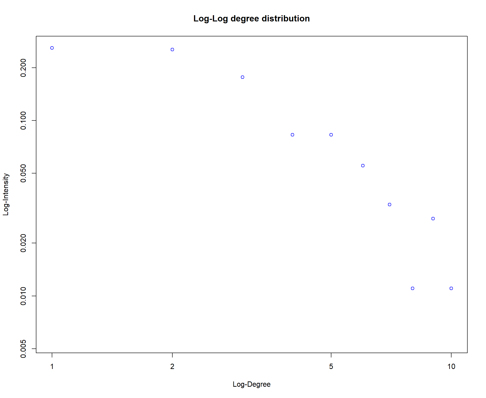
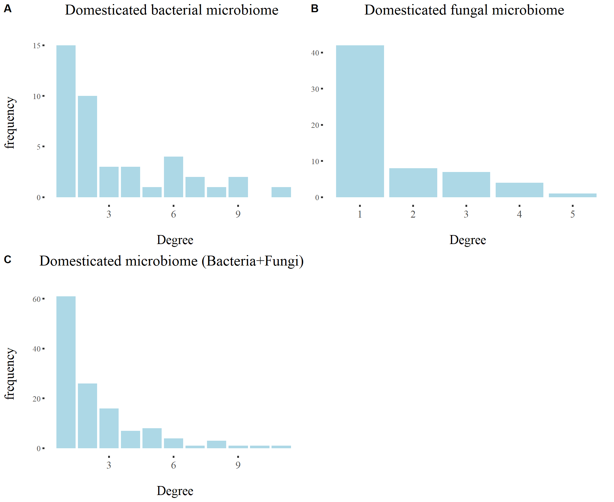
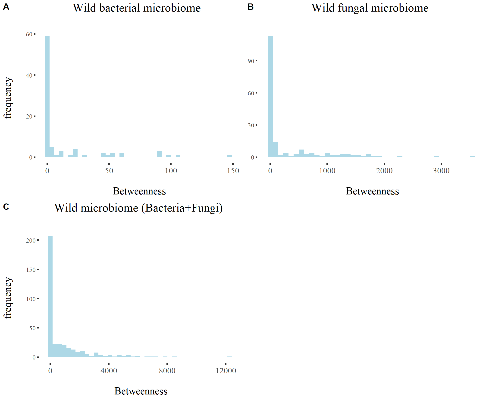
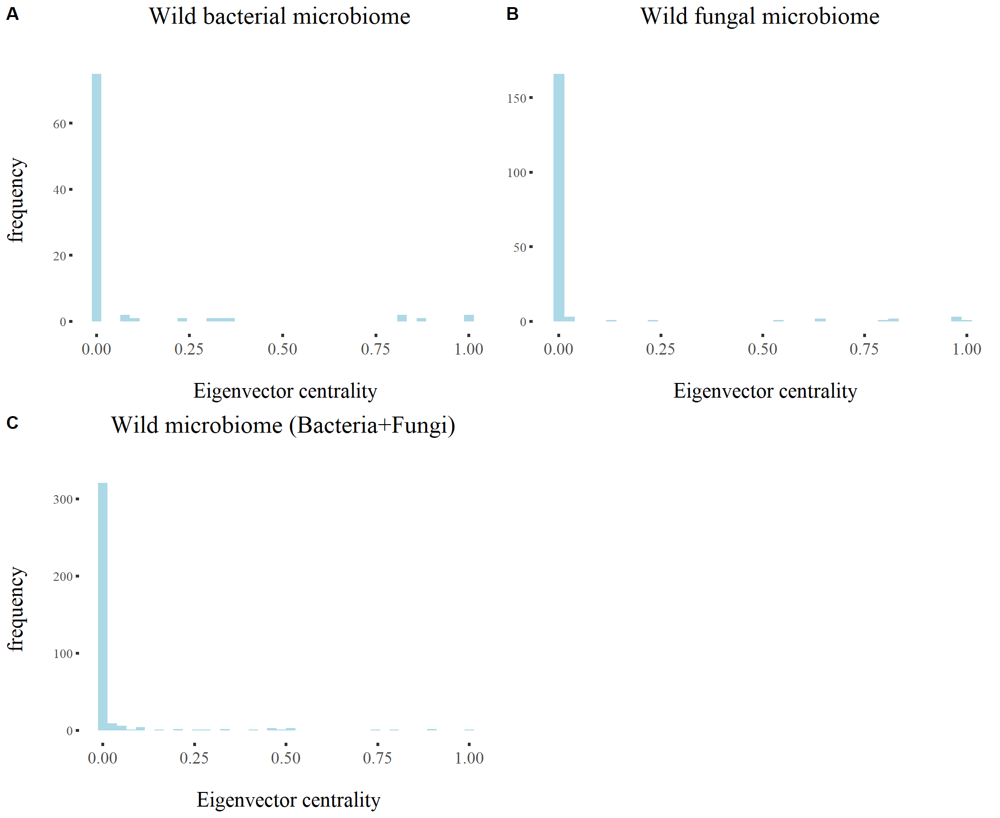
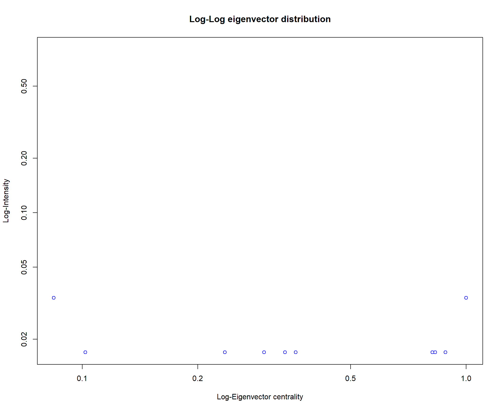
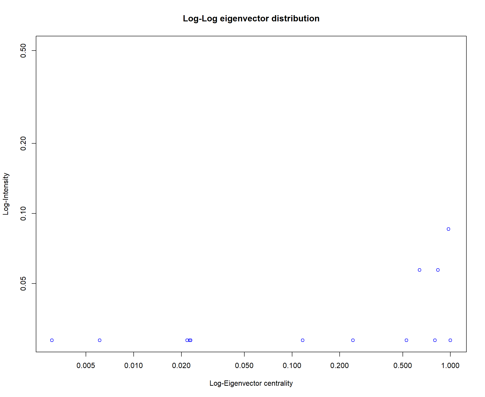
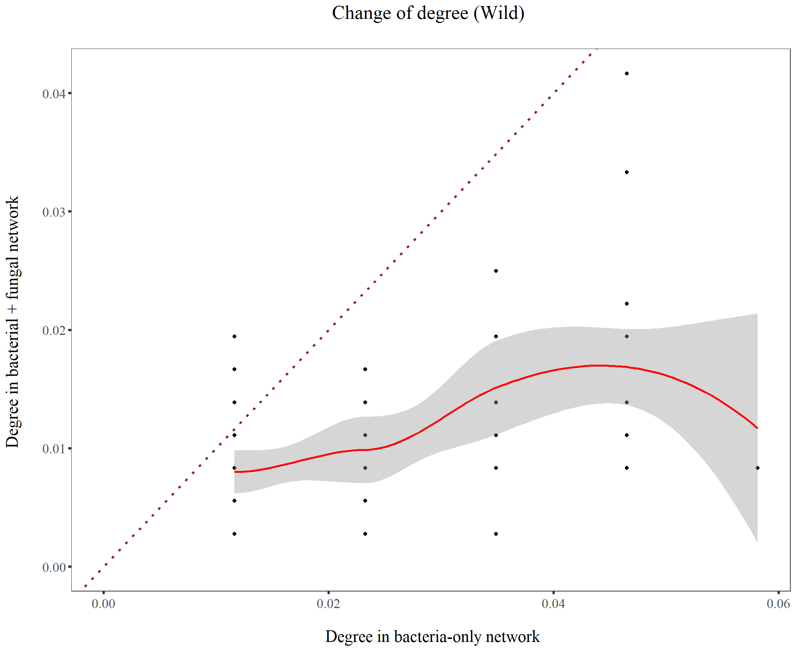
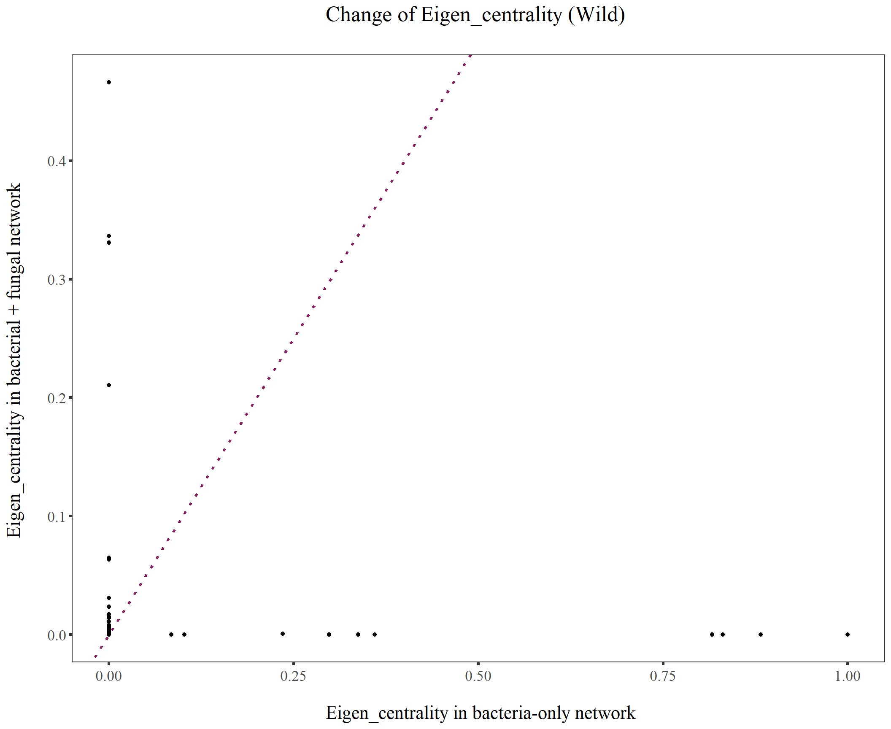

network_project
KiseokUchicago
2021-05-28
Last updated: 2021-05-29
Checks: 6 1
Knit directory: Networks_HW_S2021/
This reproducible R Markdown analysis was created with workflowr (version 1.6.2). The Checks tab describes the reproducibility checks that were applied when the results were created. The Past versions tab lists the development history.
The R Markdown file has unstaged changes. To know which version of the R Markdown file created these results, you’ll want to first commit it to the Git repo. If you’re still working on the analysis, you can ignore this warning. When you’re finished, you can run wflow_publish to commit the R Markdown file and build the HTML.
Great job! The global environment was empty. Objects defined in the global environment can affect the analysis in your R Markdown file in unknown ways. For reproduciblity it’s best to always run the code in an empty environment.
The command set.seed(20210409) was run prior to running the code in the R Markdown file. Setting a seed ensures that any results that rely on randomness, e.g. subsampling or permutations, are reproducible.
Great job! Recording the operating system, R version, and package versions is critical for reproducibility.
Nice! There were no cached chunks for this analysis, so you can be confident that you successfully produced the results during this run.
Great job! Using relative paths to the files within your workflowr project makes it easier to run your code on other machines.
Great! You are using Git for version control. Tracking code development and connecting the code version to the results is critical for reproducibility.
The results in this page were generated with repository version a5ee1bc. See the Past versions tab to see a history of the changes made to the R Markdown and HTML files.
Note that you need to be careful to ensure that all relevant files for the analysis have been committed to Git prior to generating the results (you can use wflow_publish or wflow_git_commit). workflowr only checks the R Markdown file, but you know if there are other scripts or data files that it depends on. Below is the status of the Git repository when the results were generated:
Ignored files:
Ignored: .Rhistory
Ignored: .Rproj.user/
Untracked files:
Untracked: Betweenness_dom.pdf
Untracked: Betweenness_wild.pdf
Untracked: Change_BT_dom.pdf
Untracked: Change_BT_wild.pdf
Untracked: Change_Eigen_dom.pdf
Untracked: Change_Eigen_wild.pdf
Untracked: Change_degree_dom.pdf
Untracked: Change_degree_wild.pdf
Untracked: Degree_dom.pdf
Untracked: Degree_wild.pdf
Untracked: Eigen_dom.pdf
Untracked: Eigen_wild.pdf
Untracked: Hub_dom_bac.pdf
Untracked: Hub_dom_both.pdf
Untracked: Hub_wild_bac.pdf
Untracked: Hub_wild_both.pdf
Untracked: analysis/infomap
Untracked: data/1_0.3_edge_mer.css.ss.5.tsv
Untracked: data/1_0.3_node_mer.css.ss.5.tsv
Untracked: data/2_0.3_edge_dom.css.ss.5.tsv
Untracked: data/2_0.3_node_dom.css.ss.5.tsv
Untracked: data/3_0.3_edge_wil.css.ss.5.tsv
Untracked: data/3_0.3_node_wil.css.ss.5.tsv
Untracked: data/4_0.3_edge_phy.css.ss.5.tsv
Untracked: data/5_0.3_edge_dom.phy.ss.5.tsv
Untracked: data/6_0.3_edge_wil.phy.ss.5.tsv
Untracked: data/7_0.3_edge_fun.css.ss.5.tsv
Untracked: data/8_0.3_edge_dom.fun.ss.5.tsv
Untracked: data/9_0.3_edge_wil.fun.ss.5.tsv
Untracked: data/Chesapeake_bay_links.csv
Untracked: data/Chesapeake_bay_nodes.csv
Untracked: data/Dunne2013PBioSupData.xlsx
Untracked: data/M_PA_003.csv
Untracked: data/NEE2017_nodes.csv
Untracked: data/Otago_Data_Links.csv
Untracked: data/Otago_Data_Nodes.csv
Untracked: data/Pilosof_2017NEE_interlayer_hosts.csv
Untracked: data/Pilosof_2017NEE_interlayer_parasites.csv
Untracked: data/Pilosof_etal_NEE2017_1.csv
Untracked: data/Pilosof_etal_NEE2017_2.csv
Untracked: data/Pilosof_etal_NEE2017_3.csv
Untracked: data/Pilosof_etal_NEE2017_4.csv
Untracked: data/Pilosof_etal_NEE2017_5.csv
Untracked: data/Pilosof_etal_NEE2017_6.csv
Untracked: data/Tur2016.csv
Untracked: data/Ural_valley_A_HP_048.csv
Untracked: data/chilean_NTIneg.txt
Untracked: data/chilean_NTIpos.txt
Untracked: data/chilean_TI.txt
Untracked: data/chilean_metadata.xls
Untracked: data/kongsfjorden_links.RData
Untracked: data/kongsfjorden_nodes.RData
Untracked: data/siberia1982_7_links.RData
Untracked: data/siberia1982_7_nodes.RData
Untracked: data/vizentin-bugoni_et_al_2016_complementary.xlsx
Untracked: infomap-script.py
Untracked: infomap.exe
Unstaged changes:
Deleted: analysis/Infomap_HW.Rmd
Modified: analysis/Networks_HW3.Rmd
Modified: analysis/network_project.Rmd
Note that any generated files, e.g. HTML, png, CSS, etc., are not included in this status report because it is ok for generated content to have uncommitted changes.
These are the previous versions of the repository in which changes were made to the R Markdown (analysis/network_project.Rmd) and HTML (docs/network_project.html) files. If you’ve configured a remote Git repository (see ?wflow_git_remote), click on the hyperlinks in the table below to view the files as they were in that past version.
| File | Version | Author | Date | Message |
|---|---|---|---|---|
| Rmd | a5ee1bc | KiseokUchicago | 2021-05-29 | project_start |
Final project analysis
Project for ECEV 44500 Networks in Ecology and Evolution
Professor: Mercedes Pascual, Sergio A. Alcala Corona
Student: Kiseok Lee
# libraries
library(igraph)
library(bipartite)
library(dplyr)
library(ggplot2)
library(ggrepel)
library(RColorBrewer)
library(vegan)
library(tidyverse)
library(magrittr)
library(readxl)
library(reshape2)
library(gtools)
library(devtools)
library(ggpubr)Error: package or namespace load failed for 'ggpubr' in loadNamespace(j <- i[[1L]], c(lib.loc, .libPaths()), versionCheck = vI[[j]]):
there is no package called 'rstatix'library(MASS)
## theme for ggplot
mytheme <- theme_bw() +
theme(plot.title = element_text(size = 19,hjust = 0.5, family="serif")) +
theme(axis.title.x = element_text(size = 17,hjust = 0.5, family="serif")) +
theme(axis.title.y = element_text(size = 17,hjust = 0.5, family="serif")) +
theme(axis.text.x = element_text(hjust = 0.5, vjust=0.3,size=13, family="serif"))+
theme(axis.text.y = element_text(size=10, family="serif"))+
theme(panel.grid.major = element_blank()) +
theme(panel.grid.minor = element_blank(),panel.background=element_blank(),panel.border=element_blank(),plot.background=element_blank()) +
theme(axis.ticks = element_line(size = 1.1))
mytheme_2d <- theme_bw() +
theme(plot.title = element_text(size = 19,hjust = 0.5, family="serif")) +
theme(axis.title.x = element_text(size = 17,hjust = 0.5, family="serif")) +
theme(axis.title.y = element_text(size = 17,hjust = 0.5, family="serif")) +
theme(axis.text.x = element_text(hjust = 0.5, vjust=0.3,size=13, family="serif"))+
theme(axis.text.y = element_text(size=13, family="serif"))+
theme(panel.grid.major = element_blank()) +
theme(panel.grid.minor = element_blank(),panel.background=element_blank(),plot.background=element_blank()) +
theme(axis.ticks = element_line(size = 1.1))
# color collection
my_color_collection <- c(
"#CBD588", "#5F7FC7", "orange", "#AD6F3B", "#673770",
"#D14285", "#652926", "#C84248", "#8569D5", "#5E738F",
"#D1A33D", "#8A7C64", "#599861","#616163", "#FFCDB2",
"#6D9F71", "#242F40",
"#CCA43B", "#F92A82", "#ED7B84", "#7EB77F",
"#DEC4A1", "#E5D1D0", '#0E8482', '#C9DAEA', '#337357',
'#95C623', '#E55812', '#04471C', '#F2D7EE', '#D3BCC0',
'#A5668B', '#69306D', '#0E103D', '#1A535C', '#4ECDC4',
'#F7FFF7', '#FF6B6B', '#FFE66D', '#6699CC', '#FFF275',
'#FF8C42', '#FF3C38', '#A23E48', '#000000', '#CF5C36',
'#EEE5E9', '#7C7C7C', '#EFC88B', '#2E5266', '#6E8898',
'#9FB1BC', '#D3D0CB', '#E2C044', '#5BC0EB', '#FDE74C',
'#9BC53D', '#E55934', '#FA7921', "#CD9BCD", "#508578", "#DA5724")1. Import data
Microbiome sequence of domesticated/wild rice seed (bacteria & Fungi) (https://microbiomejournal.biomedcentral.com/articles/10.1186/s40168-020-00805-0)
# domesticated rice seed microbiome
domestic_links <- read.csv('data/2_0.3_edge_dom.css.ss.5.tsv',sep="\t", header=T)
b_domestic_links <- read.csv('data/5_0.3_edge_dom.phy.ss.5.tsv',sep="\t", header=T)
f_domestic_links <- read.csv('data/8_0.3_edge_dom.fun.ss.5.tsv',sep="\t", header=T)
# wild rice seed microbiome
wild_links <- read.csv('data/3_0.3_edge_wil.css.ss.5.tsv',sep="\t", header=T)
b_wild_links <- read.csv('data/6_0.3_edge_wil.phy.ss.5.tsv',sep="\t", header=T) # bacteria
f_wild_links <- read.csv('data/9_0.3_edge_wil.fun.ss.5.tsv',sep="\t", header=T) # fungi
# microbial network of wild rice seed endophytes
domestic_web <- graph.data.frame(domestic_links, directed = F)
b_domestic_web <- graph.data.frame(b_domestic_links, directed = F) # bacteria
f_domestic_web <- graph.data.frame(f_domestic_links, directed = F) # fungi
# microbial network of wild rice seed endophytes
wild_web <- graph.data.frame(wild_links, directed = F)
b_wild_web <- graph.data.frame(b_wild_links, directed = F) # bacteria
f_wild_web <- graph.data.frame(f_wild_links, directed = F) # fungi
plot(wild_web, vertex.size=5, vertex.label=NA, main="Bacteria & Fungi-Wild rice")plot(b_wild_web, vertex.size=5, vertex.label=NA, main="Bacteria-Wild rice")plot(f_wild_web, vertex.size=5, vertex.label=NA, main="Fungi-Wild rice")# Detect communities, note the as.undirected command
wild_unweighted <- wild_web
wild_unweighted <- as.undirected(wild_unweighted)
E(wild_unweighted)$weight <- 1
# implementing Louvain method
cl <- cluster_louvain(wild_unweighted) # Can also use the weights = NULL argument
class(cl) # the result is of class communities[1] "communities"# module membership & visualization
module_membership <- membership(cl)
table(module_membership)module_membership
1 2 3 4 5 6 7 8 9 10 11 12 13 14 15 16 17 18 19 20 21
22 5 8 22 10 14 29 44 2 3 4 18 15 3 21 19 23 31 33 15 20 # color
cols <- data.frame(mem=unique(module_membership), col= my_color_collection[1:length(unique(module_membership))])
V(wild_unweighted)$module_membership <- module_membership
V(wild_unweighted)$color <- cols$col[match(V(wild_unweighted)$module_membership, cols$mem)]
# shape: triangle fungi / circle bacteria
V(wild_unweighted)$shape <- ifelse(substr(V(wild_unweighted)$name,1,1)=="B","circle","csquare")
# plot network
plot(wild_unweighted, vertex.color=V(wild_unweighted)$color, vertex.size=6, edge.arrow.width=0.3, edge.arrow.curve=0.5, vertex.shape=V(wild_unweighted)$shape, vertex.label=NA)
2. Centrality distribution
We are doing centrality analysis to see if there is descriptive difference.
2.1. Degree
## Degree histogram
plot_degree <- function(wild_web, title="Wild rice seed microbiome"){
d.wild <- igraph::degree(wild_web)
ggplot(as.data.frame(d.wild), aes(d.wild)) + geom_bar(fill='lightblue') +
ylab("frequency \n") +
xlab("\n Degree") +
# scale_x_continuous(breaks=seq(1,8,1))+
ggtitle(paste0(title," \n")) +
mytheme
}
# log-log degree distributions
plot_log_degree <- function(wild_web){
dd.wild <- degree.distribution(wild_web)
d.wild <- igraph::degree(wild_web)
d <- 1:max(d.wild)-1
ind <- (dd.wild != 0)
plot(d[ind],dd.wild[ind], log='xy', col='blue',
xlab="Log-Degree", ylab="Log-Intensity",
main="Log-Log degree distribution")
}
# Wild
p_w <- plot_degree(wild_web, title="Wild microbiome (Bacteria+Fungi)")
p_bw <- plot_degree(b_wild_web, title="Wild bacterial microbiome")
p_fw <- plot_degree(f_wild_web, title="Wild fungal microbiome")
ggarrange(p_bw, p_fw + rremove("ylab"), p_w, # + rremove("x.text")
labels = c("A", "B", "C"),
ncol = 2, nrow = 2)Error in ggarrange(p_bw, p_fw + rremove("ylab"), p_w, labels = c("A", : could not find function "ggarrange"# Wild Bacteria
plot_log_degree(b_wild_web)
# Wild Fungi
plot_log_degree(f_wild_web)# Wild Bacteria + fungi
plot_log_degree(wild_web)
# Domesticated
p_d <- plot_degree(domestic_web, title="Domesticated microbiome (Bacteria+Fungi)")
p_bd <- plot_degree(b_domestic_web, title="Domesticated bacterial microbiome")
p_fd <- plot_degree(f_domestic_web, title="Domesticated fungal microbiome")
ggarrange(p_bd, p_fd + rremove("ylab"), p_d, # + rremove("x.text")
labels = c("A", "B", "C"),
ncol = 2, nrow = 2)Error in ggarrange(p_bd, p_fd + rremove("ylab"), p_d, labels = c("A", : could not find function "ggarrange"# Domesticated Bacteria
plot_log_degree(b_domestic_web)# Domesticated fungi
plot_log_degree(f_domestic_web)
# Domesticated Bacteria + fungi
plot_log_degree(domestic_web)2.2. Betweenness centrality
## Betweenness histogram
plot_betweenness <- function(wild_web, title="Wild rice seed microbiome"){
bt.wild <- igraph::betweenness(wild_web)
df_wild <- as.data.frame(bt.wild)
ggplot(df_wild, aes(bt.wild)) + geom_bar(stat="bin",fill='lightblue',bins=40) +
ylab("frequency \n") +
xlab("\n Betweenness") +
# scale_x_continuous(breaks=seq(1,8,1))+
ggtitle(paste0(title," \n")) +
mytheme
}
# log-log betweenness distributions
plot_log_betweenness <- function(wild_web, bin_interval=500){
bt.wild <- igraph::betweenness(wild_web)
bin_interval = bin_interval
bt_dist <- as.data.frame(table(cut(bt.wild, breaks=seq(0,max(bt.wild), by=bin_interval))))
hist(bt_dist$Freq)
colnames(bt_dist)
freq_sum = sum(bt_dist$Freq)
bt_dist$density <- bt_dist$Freq / freq_sum
btd.wild <- bt_dist$density # betweenness centrality distribution
bt <- seq(0,max(bt.wild),bin_interval)[-length(seq(0,max(bt.wild),bin_interval))] # x axis
ind <- (btd.wild != 0)
plot(bt[ind], btd.wild[ind], log='xy', col='blue',
xlab="Log-Betweenness", ylab="Log-Intensity",
main="Log-Log betweenness distribution")
}
# Wild
p_bt_w <- plot_betweenness(wild_web, title="Wild microbiome (Bacteria+Fungi)")
p_bt_bw <- plot_betweenness(b_wild_web, title="Wild bacterial microbiome")
p_bt_fw <- plot_betweenness(f_wild_web, title="Wild fungal microbiome")
ggarrange(p_bt_bw, p_bt_fw + rremove("ylab"), p_bt_w, # + rremove("x.text")
labels = c("A", "B", "C"),
ncol = 2, nrow = 2)Error in ggarrange(p_bt_bw, p_bt_fw + rremove("ylab"), p_bt_w, labels = c("A", : could not find function "ggarrange"# Wild Bacteria
plot_log_betweenness(b_wild_web, bin_interval=10)
# Wild Fungi
plot_log_betweenness(f_wild_web, bin_interval=200)# Wild Bacteria + fungi
plot_log_betweenness(wild_web, bin_interval=500)# Domesticated
p_bt_d <- plot_betweenness(domestic_web, title="Domesticated microbiome (Bacteria+Fungi)")
p_bt_bd <- plot_betweenness(b_domestic_web, title="Domesticated bacterial microbiome")
p_bt_fd <- plot_betweenness(f_domestic_web, title="Domesticated fungal microbiome")
ggarrange(p_bt_bd, p_bt_fd + rremove("ylab"), p_bt_d, # + rremove("x.text")
labels = c("A", "B", "C"),
ncol = 2, nrow = 2)Error in ggarrange(p_bt_bd, p_bt_fd + rremove("ylab"), p_bt_d, labels = c("A", : could not find function "ggarrange"# Domesticated Bacteria
plot_log_betweenness(b_domestic_web, bin_interval=10)# Domesticated fungi
plot_log_betweenness(f_domestic_web, bin_interval=1)

# Domesticated Bacteria + fungi
plot_log_betweenness(domestic_web, bin_interval=70)

2.3. Eigenvector’s centrality
## Eigenvector centrality histogram
plot_eigenvector <- function(wild_web, title="Wild rice seed microbiome"){
eig.wild <- igraph::eigen_centrality(wild_web)$vector
df_wild <- as.data.frame(eig.wild)
ggplot(df_wild, aes(eig.wild)) + geom_bar(stat="bin",fill='lightblue',bins=40) +
ylab("frequency \n") +
xlab("\n Eigenvector centrality") +
# scale_x_continuous(breaks=seq(1,8,1))+
ggtitle(paste0(title," \n")) +
mytheme
}
# log-log eigenvector distributions
plot_log_eigenvector <- function(wild_web, bin_interval=0.00005){
eig.wild <- igraph::eigen_centrality(wild_web)$vector
bin_interval = bin_interval
eig_dist <- as.data.frame(table(cut(eig.wild, breaks=seq(0,max(eig.wild), by=bin_interval))))
hist(eig_dist$Freq)
colnames(eig_dist)
freq_sum = sum(eig_dist$Freq)
eig_dist$density <- eig_dist$Freq / freq_sum
eigd.wild <- eig_dist$density # eigenvector centrality distribution
eig <- seq(0,max(eig.wild),bin_interval)[-length(seq(0,max(eig.wild),bin_interval))] # x axis
ind <- (eigd.wild != 0)
plot(eig[ind], eigd.wild[ind], log='xy', col='blue',
xlab="Log-Eigenvector centrality", ylab="Log-Intensity",
main="Log-Log eigenvector distribution")
}
# Wild
p_eig_w <- plot_eigenvector(wild_web, title="Wild microbiome (Bacteria+Fungi)")
p_eig_bw <- plot_eigenvector(b_wild_web, title="Wild bacterial microbiome")
p_eig_fw <- plot_eigenvector(f_wild_web, title="Wild fungal microbiome")
ggarrange(p_eig_bw, p_eig_fw + rremove("ylab"), p_eig_w, # + rremove("x.text")
labels = c("A", "B", "C"),
ncol = 2, nrow = 2)Error in ggarrange(p_eig_bw, p_eig_fw + rremove("ylab"), p_eig_w, labels = c("A", : could not find function "ggarrange"# Wild Bacteria
plot_log_eigenvector(b_wild_web, bin_interval=0.00005)
# Wild Fungi
plot_log_eigenvector(f_wild_web, bin_interval=0.00005)
# Wild Bacteria + fungi
plot_log_eigenvector(wild_web, bin_interval=0.1)# Domesticated
p_eig_d <- plot_eigenvector(domestic_web, title="Domesticated microbiome (Bacteria+Fungi)")
p_eig_bd <- plot_eigenvector(b_domestic_web, title="Domesticated bacterial microbiome")
p_eig_fd <- plot_eigenvector(f_domestic_web, title="Domesticated fungal microbiome")
ggarrange(p_eig_bd, p_eig_fd + rremove("ylab"), p_eig_d, # + rremove("x.text")
labels = c("A", "B", "C"),
ncol = 2, nrow = 2)Error in ggarrange(p_eig_bd, p_eig_fd + rremove("ylab"), p_eig_d, labels = c("A", : could not find function "ggarrange"# Domesticated Bacteria
plot_log_eigenvector(b_domestic_web, bin_interval=0.00005)# Domesticated fungi
plot_log_eigenvector(f_domestic_web, bin_interval=0.00005)

# Domesticated Bacteria + fungi
plot_log_eigenvector(domestic_web, bin_interval=0.1)

2.4. Plot together
Wild rice seed microbiome
# (1-1) Wild - only bacteria
# Normalize
D_wb <- igraph::degree(b_wild_web, normalized = T)
BC_wb <- igraph::betweenness(b_wild_web, directed = F, normalized = T)
EC_wb <- igraph::eigen_centrality(b_wild_web, directed = F, scale = T)$vector
df_cen_wb <- data.frame(Degree=D_wb, Betweenness=BC_wb, Eigen_centrality=EC_wb)
library(scatterplot3d)
# scatterplot3d(df_cen_wb, pch = 16, color="steelblue", angle = 29, type="h")
s3d <- scatterplot3d(df_cen_wb, pch = 16, color="steelblue", angle = 29, type="h")
text(s3d$xyz.convert(df_cen_wb), labels = rownames(df_cen_wb),
cex= 0.65, col = "red")# (1-2) Wild - bacteria + fungi
# Normalize
D_w <- igraph::degree(wild_web, normalized = T)
BC_w <- igraph::betweenness(wild_web, directed = F, normalized = T)
EC_w <- igraph::eigen_centrality(wild_web, directed = F, scale = T)$vector
df_cen_w <- data.frame(Degree=D_w, Betweenness=BC_w, Eigen_centrality=EC_w)
library(scatterplot3d)
# scatterplot3d(df_cen_w, pch = 16, color="steelblue", angle = 29, type="h")
s3d <- scatterplot3d(df_cen_w, pch = 16, color="steelblue", angle = 29, type="h")
text(s3d$xyz.convert(df_cen_w), labels = rownames(df_cen_w),
cex= 0.65, col = "red")Domesticated rice seed microbiome
# (1-1) Domesticated - only bacteria
# Normalize
D_db <- igraph::degree(b_domestic_web, normalized = T)
BC_db <- igraph::betweenness(b_domestic_web, directed = F, normalized = T)
EC_db <- igraph::eigen_centrality(b_domestic_web, directed = F, scale = T)$vector
df_cen_db <- data.frame(Degree=D_db, Betweenness=BC_db, Eigen_centrality=EC_db)
library(scatterplot3d)
scatterplot3d(df_cen_db, pch = 16, color="steelblue", angle = 29, type="h")
s3d <- scatterplot3d(df_cen_db, pch = 16, color="steelblue", angle = 29, type="h")
text(s3d$xyz.convert(df_cen_db), labels = rownames(df_cen_db),
cex= 0.65, col = "red")# (1-2) Domesticated - bacteria + fungi
# Normalize
D_d <- igraph::degree(domestic_web, normalized = T)
BC_d <- igraph::betweenness(domestic_web, directed = F, normalized = T)
EC_d <- igraph::eigen_centrality(domestic_web, directed = F, scale = T)$vector
df_cen_d <- data.frame(Degree=D_d, Betweenness=BC_d, Eigen_centrality=EC_d)
library(scatterplot3d)
scatterplot3d(df_cen_d, pch = 16, color="steelblue", angle = 29, type="h")
s3d <- scatterplot3d(df_cen_d, pch = 16, color="steelblue", angle = 29, type="h")
text(s3d$xyz.convert(df_cen_d), labels = rownames(df_cen_d),
cex= 0.65, col = "red")2.5. Change of hub species
Betweenness and degree centrality
# 2D plotting with BT and Degree
plot_degree_betweenness <- function(df_cen_wb, title="Only Bacteria (Wild rice)", label_thresh=0.5){
# Label bacteria and fungi to differ color
df_cen_wb$Bacteria <- ifelse( substr(rownames(df_cen_wb),1,1)=="B","Bacteria","Fungi")
# Label subset higher that top 50% in both Degree and Betweenness centrality
label_thresh = label_thresh
label_cen_wb <- subset(df_cen_wb, (Degree >= max(df_cen_wb$Degree)*label_thresh) & (Betweenness >= max(df_cen_wb$Betweenness)*label_thresh))
# Plot only bacteria
ggplot(df_cen_wb, aes(x=Degree, y=Betweenness)) +
xlab('\n Degree (Normalized)')+
ylab("Betweenness (Normalized) \n") +
geom_point(aes(fill = Bacteria), shape = 21 ,size=5, alpha=0.9) +
scale_fill_manual(labels = c('Bacteria','Fungi'), values = c('Bacteria'= "#FF8300", 'Fungi'='#BF4AFF'))+
ggtitle(paste0(title," \n")) +
scale_x_continuous(limits = c(0, max(df_cen_wb$Degree))) +
scale_y_continuous(limits = c(0, max(df_cen_wb$Betweenness))) +
theme(legend.text=element_text(size=13)) +
geom_hline(yintercept=max(df_cen_wb$Betweenness)*0.5, color="maroon4", linetype='dotted')+
geom_vline(xintercept=max(df_cen_wb$Degree)*0.5, color="maroon4", linetype='dotted')+
# theme(legend.position="top") +
# theme(legend.title=element_blank()) +
guides(colour = guide_legend(override.aes = list(size=8), reverse = TRUE))+
guides(size=FALSE) +
mytheme_2d +
geom_text_repel(data=label_cen_wb ,aes(label=rownames(label_cen_wb)), size=4, family="serif")
}
# wild
plot_degree_betweenness(df_cen_wb, title="Only Bacteria (Wild rice)", label_thresh=0.4)plot_degree_betweenness(df_cen_w, title="Bacteria + Fungi (Wild rice)", label_thresh=0.4)# domesticated
plot_degree_betweenness(df_cen_db, title="Only Bacteria (Domesticated rice)", label_thresh=0.35)
plot_degree_betweenness(df_cen_d, title="Bacteria + Fungi (Domesticated rice)", label_thresh=0.35)2.6. Comparison of each centrality (before vs after merging kingdom)
Degree
# Investigate centrality for bacterial species before vs after merging kingdom
# (1) Degree
plot_degree_change <- function(df_cen_wb,df_cen_w, title = "Wild"){
# make rownames to column for left join
df_cen_wb <- tibble::rownames_to_column(df_cen_wb, var="OTU")
df_cen_w <- tibble::rownames_to_column(df_cen_w, var="OTU")
# left join
df_cen_w_comp <- df_cen_wb %>% left_join(df_cen_w, by=c("OTU"="OTU"))
ggplot(df_cen_w_comp, aes(x=Degree.x, y=Degree.y)) + geom_point() +
xlab('\n Degree in bacteria-only network')+
ylab("Degree in bacterial + fungal network \n") +
ggtitle(paste0(title," \n")) +
scale_x_continuous(limits = c(0, max(df_cen_w_comp$Degree.x))) +
scale_y_continuous(limits = c(0, max(df_cen_w_comp$Degree.y))) +
mytheme_2d +
stat_smooth(method="loess", colour="red") +
# stat_smooth(method='lm', se=FALSE, colour="orange") +
geom_abline(intercept=0, slope=1, color="maroon4", linetype='dotted', size=1.1 )
}
# Wild
plot_degree_change(df_cen_wb,df_cen_w, title = "Change of degree (Wild)")
# Domesticated
plot_degree_change(df_cen_db,df_cen_d, title = "Change of degree (Domesticated)")
Betweenness
# (2) Betweenness
plot_betweenness_change <- function(df_cen_wb,df_cen_w, title = "Change of betweenness (Wild)"){
# make rownames to column for left join
df_cen_wb <- tibble::rownames_to_column(df_cen_wb, var="OTU")
df_cen_w <- tibble::rownames_to_column(df_cen_w, var="OTU")
# left join
df_cen_w_comp <- df_cen_wb %>% left_join(df_cen_w, by=c("OTU"="OTU"))
ggplot(df_cen_w_comp, aes(x=Betweenness.x, y=Betweenness.y)) + geom_point() +
xlab('\n Betweenness in bacteria-only network')+
ylab("Betweenness in bacterial + fungal network \n") +
ggtitle(paste0(title," \n")) +
scale_x_continuous(limits = c(0, max(df_cen_w_comp$Betweenness.x))) +
scale_y_continuous(limits = c(0, max(df_cen_w_comp$Betweenness.y))) +
mytheme_2d +
stat_smooth(method="loess", colour="red") +
# stat_smooth(method='lm', se=FALSE, colour="orange") +
geom_abline(intercept=0, slope=1, color="maroon4", linetype='dotted', size=1.1 )
}
# Wild
plot_betweenness_change(df_cen_wb,df_cen_w, title = "Change of betweenness (Wild)")# Domesticated
plot_betweenness_change(df_cen_db,df_cen_d, title = "Change of betweenness (Domesticated)")Eigenvector’s centrality
# (3) Eigenvector's centrality
plot_eigen_centrality_change <- function(df_cen_wb,df_cen_w, title = "Change of Eigen_centrality (Wild)"){
# make rownames to column for left join
df_cen_wb <- tibble::rownames_to_column(df_cen_wb, var="OTU")
df_cen_w <- tibble::rownames_to_column(df_cen_w, var="OTU")
# left join
df_cen_w_comp <- df_cen_wb %>% left_join(df_cen_w, by=c("OTU"="OTU"))
ggplot(df_cen_w_comp, aes(x=Eigen_centrality.x, y=Eigen_centrality.y)) + geom_point() +
xlab('\n Eigen_centrality in bacteria-only network')+
ylab("Eigen_centrality in bacterial + fungal network \n") +
ggtitle(paste0(title," \n")) +
scale_x_continuous(limits = c(0, max(df_cen_w_comp$Eigen_centrality.x))) +
scale_y_continuous(limits = c(0, max(df_cen_w_comp$Eigen_centrality.y))) +
mytheme_2d +
# stat_smooth(method="loess", colour="red") +
# stat_smooth(method='lm', se=FALSE, colour="orange") +
geom_abline(intercept=0, slope=1, color="maroon4", linetype='dotted', size=1.1 )
}
# Wild
plot_eigen_centrality_change(df_cen_wb,df_cen_w, title = "Change of Eigen_centrality (Wild)")
# Domesticated
plot_eigen_centrality_change(df_cen_db,df_cen_d, title = "Change of Eigen_centrality (Domesticated)")
sessionInfo()R version 4.0.3 (2020-10-10)
Platform: x86_64-w64-mingw32/x64 (64-bit)
Running under: Windows 10 x64 (build 19042)
Matrix products: default
locale:
[1] LC_COLLATE=English_United States.1252
[2] LC_CTYPE=English_United States.1252
[3] LC_MONETARY=English_United States.1252
[4] LC_NUMERIC=C
[5] LC_TIME=English_United States.1252
attached base packages:
[1] stats graphics grDevices utils datasets methods base
other attached packages:
[1] scatterplot3d_0.3-41 MASS_7.3-53 devtools_2.4.0
[4] usethis_2.0.1 gtools_3.8.2 reshape2_1.4.4
[7] readxl_1.3.1 magrittr_2.0.1 forcats_0.5.1
[10] stringr_1.4.0 purrr_0.3.4 readr_1.4.0
[13] tidyr_1.1.3 tibble_3.0.4 tidyverse_1.3.1
[16] RColorBrewer_1.1-2 ggrepel_0.9.1 ggplot2_3.3.3
[19] dplyr_1.0.5 bipartite_2.16 sna_2.6
[22] network_1.16.1 statnet.common_4.4.1 vegan_2.5-7
[25] lattice_0.20-41 permute_0.9-5 igraph_1.2.6
[28] workflowr_1.6.2
loaded via a namespace (and not attached):
[1] colorspace_2.0-0 ggsignif_0.6.1 ellipsis_0.3.1 rprojroot_2.0.2
[5] fs_1.5.0 rstudioapi_0.13 farver_2.1.0 remotes_2.3.0
[9] fansi_0.4.2 lubridate_1.7.10 xml2_1.3.2 splines_4.0.3
[13] cachem_1.0.4 knitr_1.33 pkgload_1.2.1 spam_2.6-0
[17] jsonlite_1.7.2 broom_0.7.6 cluster_2.1.0 dbplyr_2.1.1
[21] compiler_4.0.3 httr_1.4.2 backports_1.2.1 assertthat_0.2.1
[25] Matrix_1.2-18 fastmap_1.1.0 cli_2.5.0 later_1.2.0
[29] htmltools_0.5.1.1 prettyunits_1.1.1 tools_4.0.3 dotCall64_1.0-1
[33] coda_0.19-4 gtable_0.3.0 glue_1.4.2 maps_3.3.0
[37] Rcpp_1.0.5 rle_0.9.2 cellranger_1.1.0 jquerylib_0.1.4
[41] vctrs_0.3.6 nlme_3.1-149 xfun_0.22 ps_1.6.0
[45] testthat_3.0.2 rvest_1.0.0 lifecycle_1.0.0 scales_1.1.1
[49] hms_1.0.0 promises_1.2.0.1 parallel_4.0.3 fields_11.6
[53] yaml_2.2.1 memoise_2.0.0 sass_0.3.1 stringi_1.5.3
[57] highr_0.9 desc_1.3.0 pkgbuild_1.2.0 rlang_0.4.10
[61] pkgconfig_2.0.3 evaluate_0.14 labeling_0.4.2 tidyselect_1.1.1
[65] processx_3.5.1 plyr_1.8.6 R6_2.5.0 generics_0.1.0
[69] DBI_1.1.1 pillar_1.6.0 haven_2.4.1 whisker_0.4
[73] withr_2.4.2 mgcv_1.8-33 modelr_0.1.8 crayon_1.4.1
[77] utf8_1.1.4 rmarkdown_2.7 grid_4.0.3 callr_3.7.0
[81] git2r_0.28.0 reprex_2.0.0 digest_0.6.27 httpuv_1.6.0
[85] munsell_0.5.0 bslib_0.2.4 sessioninfo_1.1.1